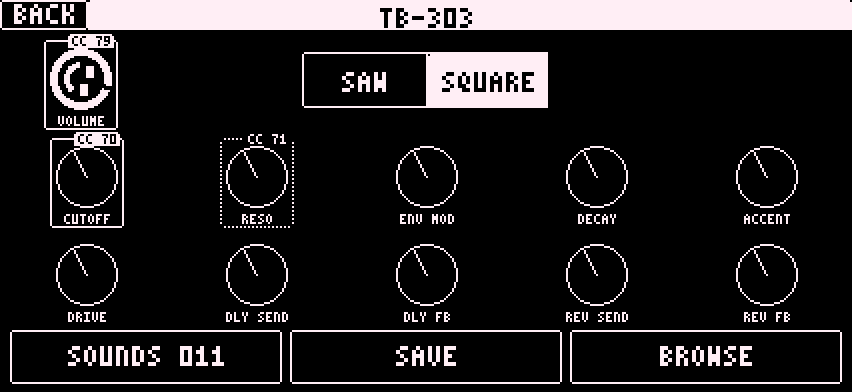
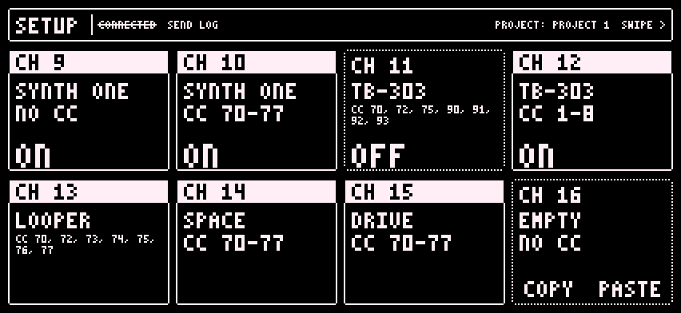

3 Synths and CCs
Every synth is set up for the Elektron default CCs, 70 to 77. Turn an encoder on your MIDI track and the knob in the app moves. LFOs from the Digitakt work too.

Long press any knob to assign it a CC. Long press again to unassign it. A box with the CC number shows which knobs are assigned.
Change channels, engines and CC numbers on the setup page.
